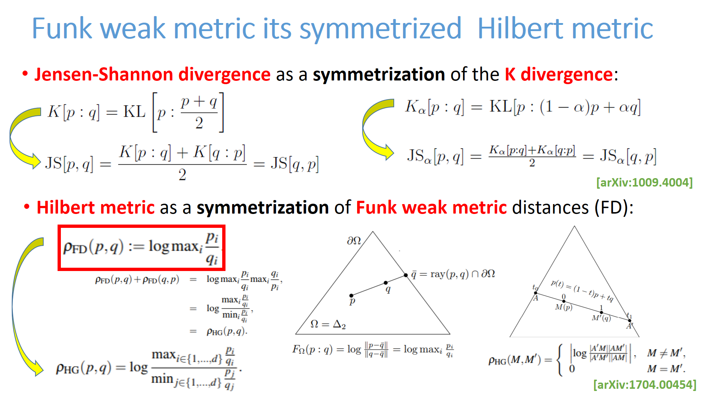

Hilbert geometries for machine learning/AI
This is the home page for exploring the Hilbert geometry of the probability simplex in machine learning.
We consider embeddings and clustering tasks.
Hilbert geometries generalize the Klein and Cayley-Klein geometries by considering
an open bounded convex domain Ω.
The Hilbert distance can be extended to a projective distance on the cone C={(λ,λΩ) : λ∈R++}.
The projective distance is also called Birkhoff cone distance.
Non-linear Embeddings in Hilbert Simplex Geometry
by Frank Nielsen and Ke Sun
Graphical abstract:
@techrep{HSGEmbedding-2022,
title={{Non-linear Embeddings in Hilbert Simplex Geometry}},
author={Nielsen, Frank and Sun, Ke},
number={2203.11434},
institution={arXiv},
note={Presented at ICML TAG-ML 2023}
year={2022}
}
Clustering in Hilbert simplex geometry
by Frank Nielsen and Ke Sun
An invitation to machine learning in Hilbert geometries and Birkhoff projective geometries.
Visualizing the smallest enclosing ball in the probability simplex wrt to various distances:
Visualizing a k-clustering:
Visualizing forward and reverse Funk balls and Hilbert balls:
Visualizing a 1-clustering (minimax, smallest enclosing ball):
Voronoi diagrams with respect to the Aitchison distance (left), the Hilbert simplex distance (middle) and its equivalent variation norm space (right)



@incollection{HSEG-2019,
title={{Clustering in Hilbert’s projective geometry:
The case studies of the probability simplex and the elliptope of correlation matrices}},
author={Nielsen, Frank and Sun, Ke},
booktitle={Geometric Structures of Information},
pages={297--331},
year={2019},
publisher={Springer}
}
@article{HSG-2017,
title={{Clustering in Hilbert simplex geometry}},
author={Nielsen, Frank and Sun, Ke},
journal={arXiv preprint arXiv:1704.00454},
year={2017}
}
@inproceedings{HSGball-2017,
title={{On balls in a Hilbert polygonal geometry}},
author={Nielsen, Frank and Shao, Laetitia},
booktitle={33rd International Symposium on Computational Geometry (SoCG 2017)},
year={2017},
organization={Schloss Dagstuhl-Leibniz-Zentrum fuer Informatik}
}
@techreport{CKML-2017,
title={{Machine Learning with Cayley-Klein metrics}},
author={Shao, La{\"e}titia and Nielsen, Frank},
institution={Ecole Polytechnique},
year={2017}
}
Hilbert geometry of the symmetric
positive-definite bicone: Application to the geometry of the extended Gaussian family
(with Jacek Karwowski), August 2025
November 2018, last updated August 2025.